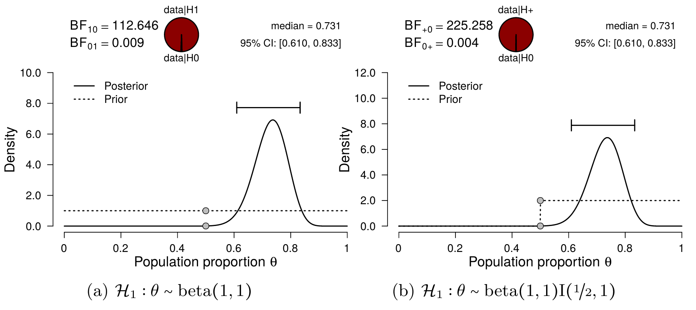

4 The Beer Tasting
With several key components of Bayesian inference explained, we can return to the beer tasting. Just as before, we have several models at our disposal that make certain claims about the proportion \(\theta\). In this case, \(\theta\) is the population proportion of people that will give the correct response to which of the two beers contains alcohol. Again, a model can be extremely convinced of \(\theta\) being equal to a single value, such as \(0.5\), which implies that people are simply guessing (i.e., the null hypothesis). Alternatively, a model can spread its prior beliefs by using the beta distribution. This beta distibution can then be two-sided (if the model wants to bet on all values between 0 and 1), or truncated to be one-sided (if the model only wants to bet on values greater or smaller than 0.5). These models can function as the alternative hypothesis. We will use these models for hypothesis testing, which is just another term for model comparison. In this chapter, we will analyze the beer tasting results from a Bayesian point of view, to get a practical understanding of the concepts introduced in the previous chapters.
4.1 Methods
On a Friday afternoon, May 12th 2017, an informal beer tasting experiment took place at the Psychology Department of the University of Amsterdam. The experimental team consisted of three members: one to introduce the participants to the experiment and administer the test, one to pour the drinks, and one to process the data. Participants tasted two small cups filled with Weihenstephaner Hefeweissbier, one with alcohol and one without, and indicated which one contained alcohol. Participants were also asked to rate the confidence in their answer (measured on a scale from \(1\) to \(100\), with \(1\) being completely clueless and \(100\) being absolutely sure), and to rate the two beers in tastiness (measured on a scale from \(1\) to \(100\), with \(1\) being the worst beer ever and \(100\) being the best beer ever). The experiment was double-blind, such that the person administering the test and interacting with the participants did not know which of the two cups contained alcohol. For ease of reference, each cup was labeled with a random integer between \(1\) and \(500\), and each integer corresponded either to the alcoholic or non-alcoholic beer. A coin was flipped to decide which beer was tasted first. The setup was piloted with \(9\) participants; subsequently, we tested as many people as possible within an hour, and also recorded which of the two beers was tasted first. On average, testing took approximately 30 seconds per participant, yielding a total of \(57\) participants. Of the 57 participants, 42 (\(73.7\%\)) correctly identified the beer that contained alcohol: in other words, there were \(s = 42\) successes and \(f = 15\) failures.1
4.2 Analysis in JASP
In order to analyze the collected data in JASP, the Bayesian binomial test can be used, which can be found under the menu labeled “Frequencies”. Several settings are available for the binomial test, allowing exploration of different analysis choices. Figure 4.1 presents a screenshot of the options panel in JASP. For this analysis, we specify a test value of \(0.5\) (i.e., chance performance), and \(a = b = 1\) for the prior distribution of \(\theta\) under \(\mathcal{H}_1\). Note that in a sensitivity or robustness analysis (covered in the next chapter), other values for \(a\) and \(b\) may be explored to assess their impact on the posterior distribution.
The null hypothesis here postulates that participants perform at chance level, which implies \(\theta = 0.5\) since if participants cannot taste the difference, they will just be guessing. The alternative hypothesis postulates that this is not the case. There are several options for the alternative hypothesis in terms of \(a\), \(b\), and its directionality. For instance, in the case of two-sided hypothesis testing, the hypotheses can be specified as follows: \[\begin{equation*} \mathcal{H}_0: \theta = 0.5 \end{equation*}\] \[\begin{equation} \mathcal{H}_1: \theta \sim \text{beta}(1, 1)\text{.} \label{eq:hypoSetupTwoSided} \end{equation}\] However, since we wish to test whether or not participants’ discriminating ability exceeds chance, we can specify the alternative hypothesis to allow only values of \(\theta\) greater than \(0.5\) (note the `\(+\)’ in the subscript): \[\begin{equation} \mathcal{H}_+: \theta \sim \text{beta}(1, 1) \text{I} (0.5, 1)\text{,} \label{eq:hypoSetup} \end{equation}\] where I indicates truncation of the beta distribution to the interval \([0.5, 1]\).
Figure 4.2 illustrates the results of the binomial test. The left panel shows the prior and the posterior distribution of \(\theta\) for the two-sided alternative hypothesis, along with the median and credible interval of the posterior distribution. The posterior median equals \(0.731\) and the \(95\%\) credible interval ranges from \(0.610\) to \(0.833\), indicating a substantial deviation of \(\theta\) from \(0.5\). For each value of \(\theta\), the change from prior distribution to posterior distribution is quantified by predictive adequacy: for those values of \(\theta\) that predict the data better than average, the posterior density exceeds the prior density. Additionally, the two-sided Bayes factor \(\text{BF}_{10} = 112\), which means the data are 112 times more likely under \(\mathcal{H}_1\) than under \(\mathcal{H}_0\).
The right panel shows inference for the one-sided positive hypothesis (i.e., \(\mathcal{H}_+: \theta \geq 0.5\)) compared to the null hypothesis: the resulting Bayes factor is \(225.26\) in favor of the alternative hypothesis, which means the data are \(225\) times more likely under \(\mathcal{H}_+\) than under \(\mathcal{H}_0\). Note that the posterior distribution itself has hardly changed, compared to the two-sided result: the posterior median still equals \(0.731\) and the \(95\%\) credible interval ranges from \(0.610\) to \(0.833\). Because virtually all posterior mass was already to the right of \(0.5\) in the two-sided case, the posterior distribution was virtually unaffected by changing from \(\mathcal{H}_1\) to \(\mathcal{H}_+\). However, in the right panel, \(\mathcal{H}_+\) only predicts values greater than \(0.5\), which is reflected in the prior distribution: all prior mass is now located in the interval \((0.5\text{, } 1)\), and as a result, the prior mass in the interval \((0.5\text{, } 1)\) has doubled. If the posterior remains constant, but the prior mass doubles, this means that the Bayes factor also doubles (perhaps best illustrated by the Savage-Dickey density ratio). In other words, a model that is predicting the data well and is focusing more on those values (e.g., \(\mathcal{H}_+\)) has more evidence in its favor than a model that is predicting the data well, but spread its bets more (e.g., \(\mathcal{H}_1\)). Such a built in reward for making a more specific prediction is an important mechanism in Bayesian model comparison, and is known as parsimony. Making a more specific prediction comes with a risk though: \(\mathcal{H}_-\) predicted the data a lot worse than \(\mathcal{H}_0\) because it bet on the wrong direction.

4.3 Continuous Updating
The beer tasting experiment also highlights one of the main strengths of Bayesian inference: real-time monitoring of the incoming data. As the data accumulate, the analysis can be continuously updated to include the latest results. In other words, the results may be updated after every participant, or analyzed all at one, without affecting the resulting inference. To illustrate this, we can compute the posterior distribution for the first \(9\) participants of the experiment for which \(s = 6\) and \(f = 3\). Specifying the same beta prior distribution as before, namely a truncated beta distribution with shape parameters \(a = b = 1\), and combining this with the data, yields a truncated beta posterior distribution with shape parameters \(a = 6 + 1 = 7\) and \(b = 3 + 1 = 4\) (see also Section 3.5.2). The resulting posterior distribution is presented in the left panel of Figure 4.3. Now, we can take the remaining 48 participants and update our knowledge once more. Because we already have knowledge about the population’s rate parameter \(\theta\), namely the results of the first 9 participants, we can incorporate this in the analysis through the prior distribution, following Lindley’s maxim “today’s posterior is tomorrow’s prior” (Lindley 1972).
In this case, we start with a truncated beta prior distribution with \(a = 7\) and \(b = 4\), and update this with the data of the remaining 48 participants. Out of the 48 participants, 36 were correct, and 12 were incorrect. Updating the prior distribution with this data yields a posterior distribution with shape parameters \(a = 7 + 36 = 43\) and \(b = 4 + 12 = 16\), which is exactly the same posterior distribution obtained when analyzing the full data set at once. This two-step procedure is illustrated in Figure 4.3. The left panel shows the original prior distribution (i.e., the truncated beta distribution with \(a = 1, b = 1\)) and the posterior distribution for the first \(9\) participants. The right panel shows the inference for the remaining \(48\) participants, while starting with the posterior-turned-prior distribution reflecting the knowledge about the first \(9\) participants (a truncated beta distribution with \(a = 7, b = 4\)).
We can even look at the evolution of the Bayes factor, as the data come in. This development can be inspected by means of a sequential analysis. Figure 4.3 shows the evolution of the Bayes factor as more data are collected. Initially the evidence is inconclusive, but after about \(30\) participants the evidence increasingly supports \(\mathcal{H}_1\). Being able to monitor the data as such can be very useful while planning or conducting an experiment. For instance, instead of needing to already commit to a certain sample size, a researcher can simply keep going untill a certain evidence threshold (for either hypothesis) is reached.2

4.4 Concluding Thoughts
In this chapter we compared several models that made a statement about the beer tasting ability of people. The null model was absolutely sure that people cannot taste the difference between alcoholic and non-alcoholic beer, while the positive alternative model (\(\mathcal{H}_+\)) stated that people’s ability ranges uniformly from 0.5 to 1. The Bayes factor comparing the predictions of \(\mathcal{H}_+\) and \(\mathcal{H}_0\) indicated the observed proportion, \(0.73\) (\(n = 57\)), to be 225 times more likely under \(\mathcal{H}_+\) than under \(\mathcal{H}_0\). This can be seen as very strong evidence (see Figure 2.3) in favor of the theory that people can taste the difference between the two beers. In addition, Bayesian knowledge updating was illustrated by analyzing the data sequentially, as opposed to all at once.
Lindley, D. V. 1972. Bayesian Statistics, a Review. Philadelphia (PA): SIAM.
Three video recordings of the procedure are available at this OSF repository.↩︎
This is in contrast to using \(p\)-values, where the data can only be analyzed once, and any additional look at the data will inflate the type I error rate.↩︎